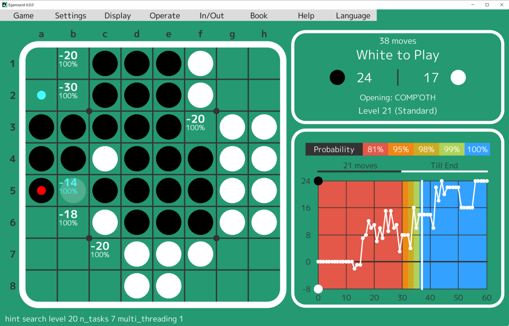

日本語
Egaroucid
World's strongest Othello AI (2021-Now)
Egaroucid is a othello AI from scratch, and a othello learning software in which the othello AI calculates.
The early version got the 1st place in a contest,
CodinGame Othello as of 2022/08/15.
I built a much stronger AI and released a
software for othello players.
You can play the light version on the web,
Egaroucid for Web
